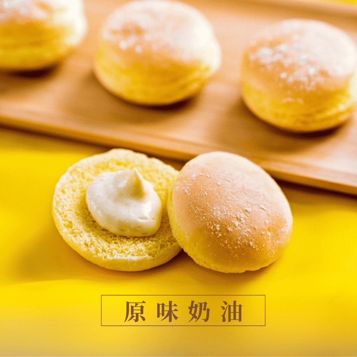
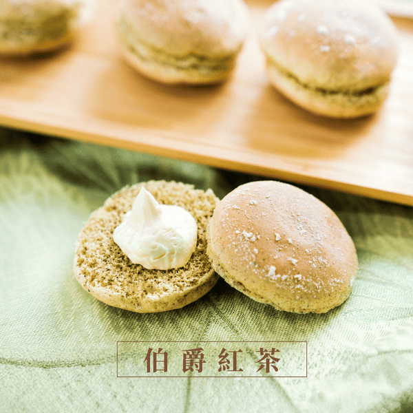
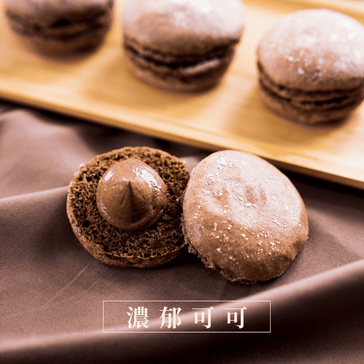
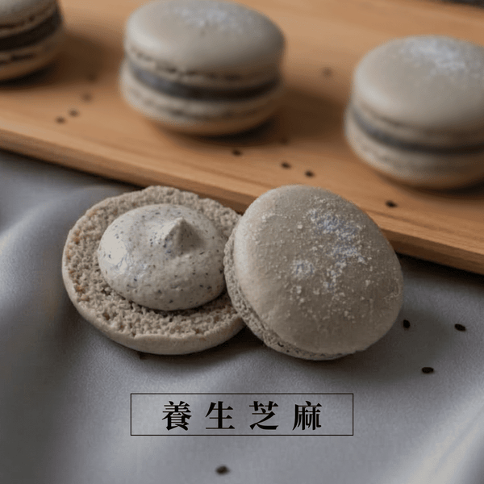
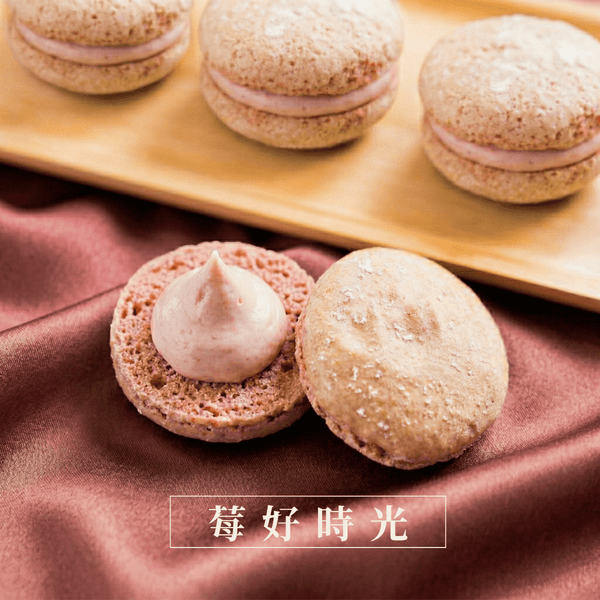
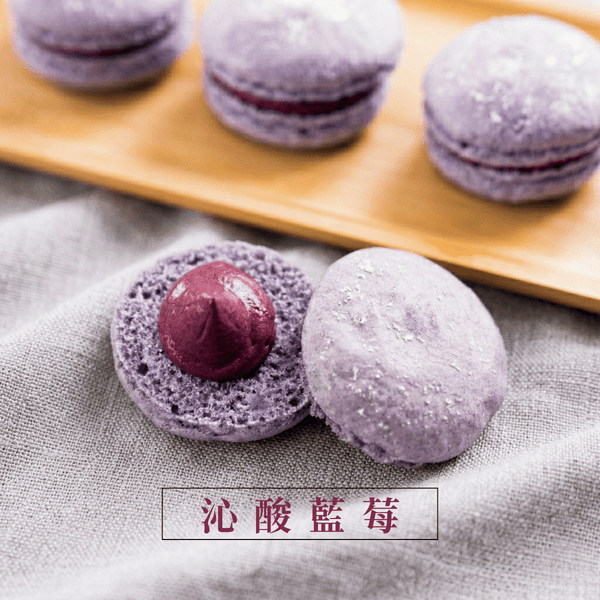

買了一堆馬卡濃，終於到貨啦？
小烏龜烘培｜馬卡濃多口味開箱短影音
概念
像朋友在家開箱的生活感短片，一次帶出全部口味：先用宇治抹茶的內餡大特寫抓住目光，再讓觀眾看到「好多盒、好多顏色」，每個口味快速「舉起來、掰開來」，最後告訴大家只在網路買得到。
前 3 秒：綠色抹茶內餡朝鏡頭拉開 ＋「買了一堆馬卡濃，終於到貨啦？」
影片節奏
1. 鉤子抹茶內餡大特寫
2. 到貨門口好幾盒
3. 開箱七色一次排開
4. 逐一口味每味兩鏡：舉起＋掰開
5. 新口味宇治抹茶收尾
6. 結尾卡網路購買資訊
出場口味







逐鏡腳本
| # | 秒數 | 景別 | 畫面 | 口白／字幕 |
|---|---|---|---|---|
| 1 | 0:00–0:01 | 大特寫 | 雙手把一顆宇治抹茶上下殼轉開，厚厚的綠色奶油霜朝鏡頭拉開 | 「買了一堆馬卡濃」 |
| 2 | 0:01–0:02 | 中景 | 家門口放著好幾盒冷藏箱，手伸進來提起一盒 | 「終於到貨啦？」 |
| 3 | 0:02–0:03 | 特寫 | 窗邊桌上撕開封箱膠帶、掀開箱蓋，露出禮盒 | 「在家開箱」 |
| 4 | 0:03–0:05 | 俯拍 | 好幾盒同時打開，七種顏色排開，鏡頭慢慢推近 | 「打開來口味一次排開」 |
| 5 | 0:05–0:06 | 特寫 | 舉起一顆經典原味（金黃殼） | 「經典原味」 |
| 6 | 0:06–0:07 | 大特寫 | 掰開，奶白色奶油霜朝鏡頭 | 「奶香很純粹」 |
| 7 | 0:07–0:08 | 特寫 | 舉起一顆伯爵紅茶（茶褐殼） | 「伯爵紅茶」 |
| 8 | 0:08–0:09 | 大特寫 | 掰開，淺奶油色內餡朝鏡頭 | 「有佛手柑茶香」 |
| 9 | 0:09–0:10 | 特寫 | 舉起一顆濃郁可可（深褐殼） | 「濃郁可可」 |
| 10 | 0:10–0:11 | 大特寫 | 兩個拇指輕壓，巧克力餡從邊緣擠出來 | 「苦甜剛好」 |
| 11 | 0:11–0:12 | 特寫 | 舉起一顆養生芝麻（淺灰殼） | 「養生芝麻」 |
| 12 | 0:12–0:13 | 大特寫 | 掰開，帶芝麻碎粒的灰色內餡朝鏡頭 | 「芝麻很香」 |
| 13 | 0:13–0:14 | 特寫 | 舉起一顆莓好時光（粉褐殼） | 「限定草莓」 |
| 14 | 0:14–0:15 | 大特寫 | 掰開，淺粉紅內餡朝鏡頭 | 「大湖草莓做的」 |
| 15 | 0:15–0:16 | 特寫 | 舉起一顆沁酸藍莓（紫色殼） | 「限定藍莓」 |
| 16 | 0:16–0:17 | 大特寫 | 上下殼拉開，深紫紅內餡朝鏡頭 | 「酸甜剛剛好」 |
| 17 | 0:17–0:18 | 特寫 | 從宇治抹茶禮盒中央捏起一顆 | 「新出的宇治抹茶」 |
| 18 | 0:18–0:19 | 大特寫 | 再拉開一次，綠色內餡拉絲朝鏡頭 | 「也一起到了」 |
| 19 | 0:19–0:21 | 中景 | 好幾盒排在窗邊桌上，手把其中一盒往鏡頭遞 | 「只在網路買得到」 |
| 20 | 0:21–0:24 | 俯拍 | 七色禮盒整盒俯拍，音樂收尾 | （結尾卡） |
結尾卡
小烏龜烘培｜馬卡濃
只在網路賣
little-turtle.my1shop.com/macaroon
黑貓冷藏宅配｜滿 3000 免運
11/15 前發布時加上：宇治抹茶 11/15 開賣，LINE 預購
只在網路賣
little-turtle.my1shop.com/macaroon
黑貓冷藏宅配｜滿 3000 免運
11/15 前發布時加上：宇治抹茶 11/15 開賣，LINE 預購
拍攝風格
- 只拍手，不露臉；指甲乾淨素色，袖口素面
- 手機微距距離，背景糊成明亮的窗光
- 窗邊自然光，暖色、高飽和，七種顏色要分得清楚
- 約 1 秒一刀，跟著輕快 lo-fi 節拍切
- 女生口白，語速快、語氣活潑；每句都上大字幕
- 盒子與包裝畫面不出現文字
需要跟您確認
- 預計發布日在 11/15 前還是後？（決定結尾卡要不要寫 LINE 預購）
- 影片裡要不要出現價格？宇治抹茶用 370 還是 350？
- 莓好時光要不要標「限定／預購」？
- 有沒有綜合口味盒？沒有的話就是「一次買好幾盒不同口味」
- 結尾卡要不要放 IG 帳號？帳號是？
- 離島是否可寄送？
- 口白用「限定草莓／限定藍莓」，還是正式品名「莓好時光／沁酸藍莓」？